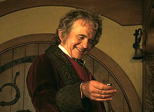
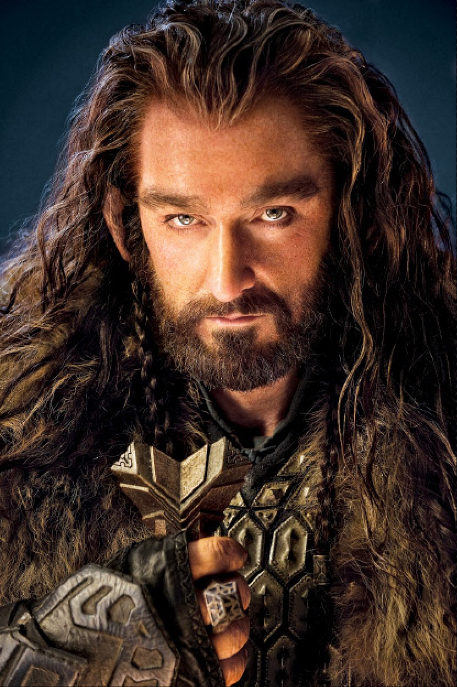
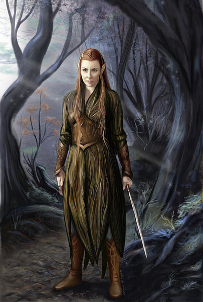
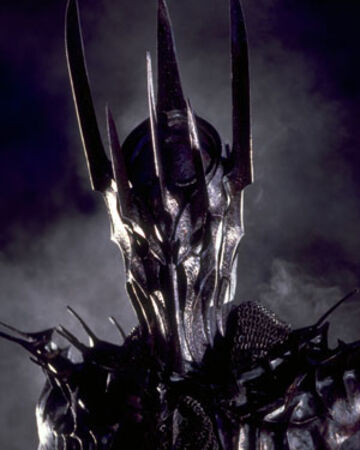
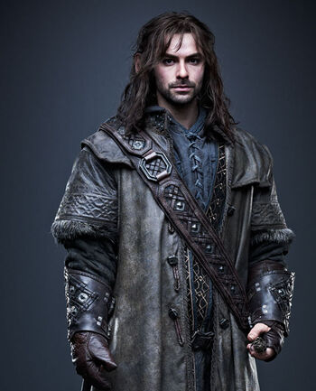
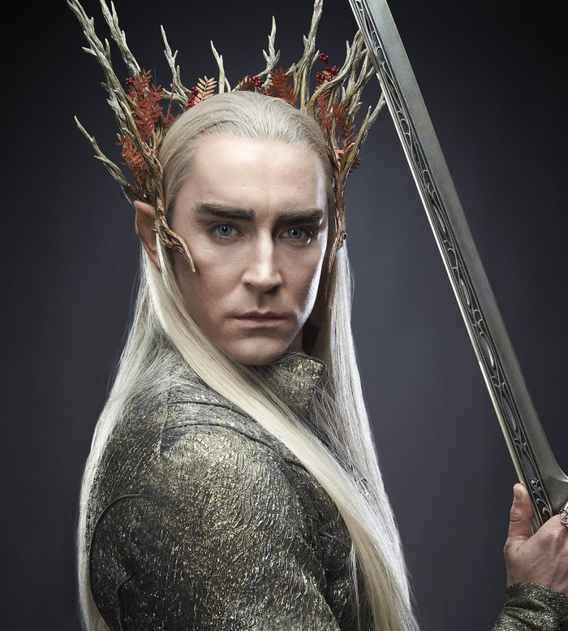

Главные герои фильма "Хоббит"
Бильбо Бэггинс
Бильбо Бэггинс (англ. Bilbo Baggins, вестрон Bilba Labingi; варианты перевода: Торбинс, Беббинс, Сумникс) — хоббит из Шира, персонаж произведений Дж. Р. Р. Толкина (главный герой повести «Хоббит, или Туда и обратно», один из персонажей трилогии «Властелин колец»). У него есть двоюродный племянник Фродо Бэггинс.

Торин Дубощит
Торин Дубощит (англ. Thorin Oakenshield, вариант перевода — Торин Оукеншильд) — в легендариуме Дж. Р. Р. Толкина гном, один из главных персонажей повести «Хоббит, или Туда и обратно». Торин является наследником Королевства Под Горой, откуда его отец и дед были изгнаны драконом Смаугом. Он организует поход с целью вернуть сокровища своих предков, в котором также приняли участие двенадцать гномов и хоббит Бильбо Бэггинс.

Леголас
Краткое описание персонажа Леголаса есть на странице "Главные герои". Но в фильме хоббит он выполняет примерно ту же самую функцию.
Тауриэль
Тауриэль (англ. Tauriel) — персонаж фильмов Питера Джексона «Хоббит: Пустошь Смауга» и «Хоббит: Битва пяти воинств», входящих в трилогию «Хоббит». В оригинальном произведении Джона Р. Р. Толкина, по которому сняты фильмы, этот персонаж отсутствует. Тауриэль — лесная эльфийка, её имя означает «дочь Леса», она возглавляет эльфийскую стражу. Её роль исполнила канадская актриса Эванджелин Лилли.

Саурон
Саурон (кв. Sauron) — в легендариуме Дж. Р. Р. Толкина майа из свиты Вала Аулэ. Главный антагонист романа «Властелин Колец». Саурон был одним из первых майар, которые приняли сторону Мелькора, став одним из самых лояльных и самых ужасных его сподвижников, но после Войны Гнева и поражения своего господина Саурон возвысился до величайшего врага Свободных народов Средиземья на протяжении Второй и Третьей эпох.

Кили
Кили (англ. Kíli) – самый молодой из тринадцати спутников Торина и Бильбо Бэггинса в походе к Эребору.

Трандуил
Трандуил (корректная передача — Тра́ндуиль; синд. Thranduil) — в легендариуме Дж. Р. Р. Толкина могущественный король Лесных эльфов Лихолесья, также известного как Мирквуд. Впервые упоминается (без имени, просто как «король эльфов») в тексте повести «Хоббит, или Туда и обратно». Происходит из народа синдар.

наверх